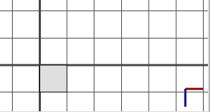
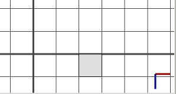
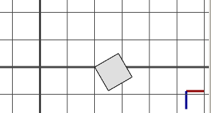
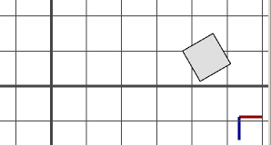

t operation
t(tx, ty, tz)
tx, ty, tz float Amount to translate in each direction.
The t operation translates the current shape (it adds the translation vector (tx, ty, tz) to scope.t).
The translation is relative to the scope axes. If the scope is rotated, the given translation vector is rotated accordingly before it is applied.
The relative operator ' permits a convenient notation relative to the scope size: t('tx, 0, 0) is equivalent to t(tx*scope.sx, 0, 0).
Note: t(x,y,z) is the same as translate(rel, scope, x, y, z).
Related
Examples
Translate - Rotation Concatenation

A--> primitiveCube()
This is the initial shape we start with.

A--> primitiveCube() t(2,0,0)
First a translation of two units along the x-axis.

A--> primitiveCube() t(2,0,0) r(0,30,0)
Then a rotation of 30 degrees around the y-axis.

A-->
primitiveCube()
t(2,0,0)
r(0,30,0)
t('2,0,0)
And another translation of 2 units along the x-axis.
Note:
- translations are along the scope's x-axis, i.e. the rotation changes the global translation direction!
- the relative operator ' is used - here it does not make a difference because scope.sx is 1